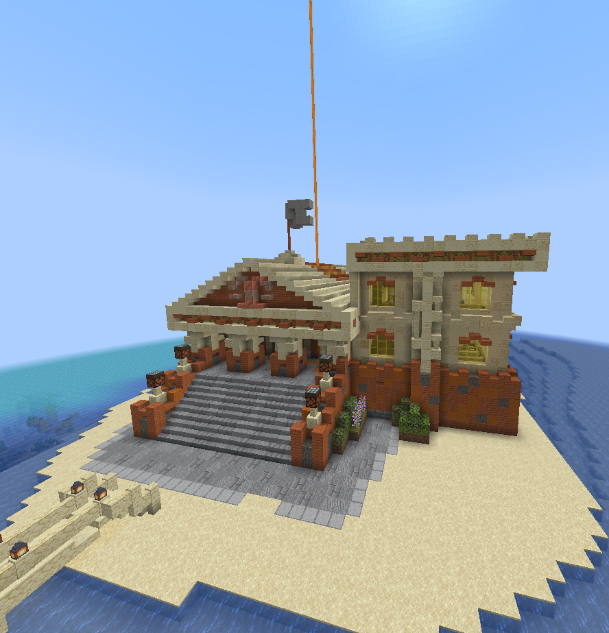

Суд
Суд — одна из главных особенностей сервера и полноценный ролевой (RP) процесс. Вместо мгновенных банов спорные ситуации проходят через разбирательство: с судьёй, сторонами, а при желании — и присяжными. Это превращает конфликты в часть истории сервера.

📷Скриншот: остров суда
положите файл court.png в assets/screenshots/
Идея
Цель суда — не «забанить плохого», а разобраться по-честному. Грамотно выстроенный
RP-процесс с расследованием, показаниями и приговором — это самостоятельный контент сервера.
Роль судьи исполняет администратор njrel.
Что можно вынести на суд
Через суд проходит практически любой спор между игроками — от кражи у мирного и мошенничества до претензий, связанных с войнами, рейдами и убийствами. Если вы считаете, что с вами поступили нечестно — обращайтесь в суд.
- Воровство у мирного игрока.
- Мошенничество и нарушение договорённостей.
- Споры вокруг войн, рейдов, убийств и добычи (РП-разбор).
- Нарушение правил города и нейтральной зоны.
Как проходит разбирательство
- Пострадавший подаёт обращение в суд (на острове суда в городе или через Discord).
- Назначается разбор: стороны излагают позицию, при необходимости собираются присяжные.
- Администратор njrel (судья) поднимает логи (StellarProtect и другие инструменты) и устанавливает факты.
- Выносится приговор; виновный исполняет решение.
Возможные решения суда
| Решение | Описание |
|---|---|
| Возврат имущества | Виновный возвращает украденное или его эквивалент. |
| Штраф | Компенсация пострадавшему ресурсами. |
| Временные ограничения | Ограничение действий на срок. |
| Запрет посещения города | Потеря доступа к станциям, торговле и контрактам. |
| Иные RP-наказания | На усмотрение суда, по тяжести и обстоятельствам. |
Читы — отдельный случай
Когда дело касается только администрации
Если в логах проверки клиента (ModSpy) или по античиту администратор njrel видит
читы — он может сразу выдать бан и предупреждение, без разбирательства.
Но игрок вправе оспорить это решение через суд (с присяжными и разбором доказательств).
О том, что разрешено в PvP, а что считается нарушением — на странице Правила. Частые вопросы — в разделе Вопросы и ответы.